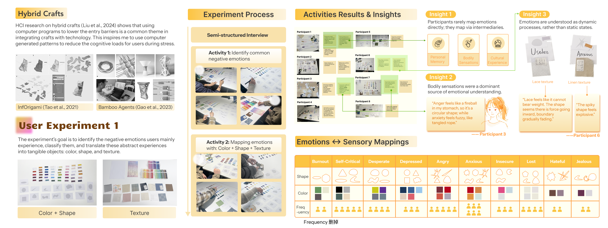

Sewing Emotions
A tangible + AI system design project about emotional awareness,expression, and soothing.
2026 Spring

Sewing Emotions is a system that combines a physical sewing kit with a website with AI image generation. It guides users through accessible sewing activities during emotional distress, aiming to encourage emotional awareness and expression, while supporting sensory grounding through the action of sewing.
Sensory grounding are techniques that help people calm down when feeling overwhelmed, by focusing on multi-sensory experiences including sound, smell, sight, and touch. Meanwhile, crafts have been used as medium of therapy, and can effectively help people feel better (Bukhave et al., 2025). This project focus on using the process of hand crafts experiences as a way of sensory grounding.
In this project, I focus on how the action of sewing, which combines tactile sensation, rhythmic movement, and creative expression through making, can be used as a grounding technique to help people regulate their emotions. The system includes a physical sewing kit with different materials and textures, and a website that provides guided sewing activities based on users' emotional states.
The website uses AI image generation to create personalized sewing patterns and prompts that resonate with users' feelings.
User Research Insights
